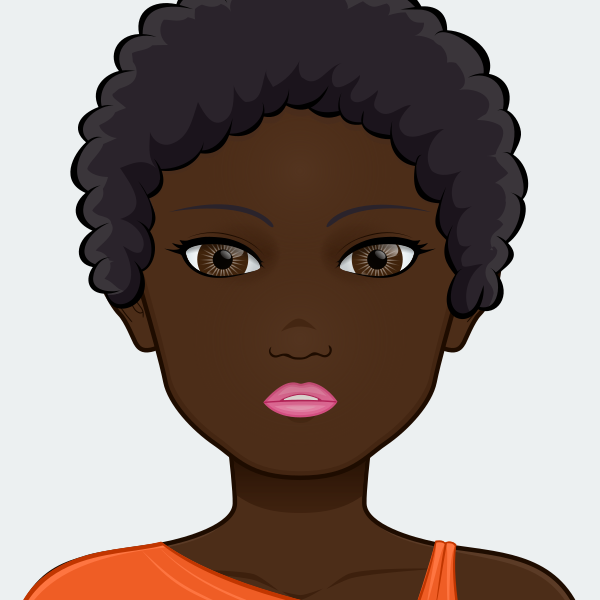

Newuser "app state"
Choose a character to play through the hunt
Characters
Anna Rodriguez
Anna Rodriguez, 23
Vice: Coffee
Anna receives the letter in the middle of a shift at Barriques. She can’t believe Mr. Reality named her in his will — she never knew he remembered her name. But she remembers him. He always wore a bow tie and had the same order at Barriques every Tuesday and Thursday. She can't wait to get off work and begin hunting, but she’ll have to juggle hunting with working at Barriques and taking night classes at the university to eventually become a nurse practitioner. She relies on coffee to get through the long days and longer nights.
VICE: Coffee
Hal White
Hal White, 34
Vice: Local Music
Hal remembers Mr. Reality because he was easy to spot in the sparse crowd of regulars that showed up to his monthly show at Harmony Bar and Grill. Sitting in the back, resting his chin on his cane, he listened with rapt attention to all of Hal’s songs, even the half-assed covers. Hal keeps a busy schedule frequenting other local musicians’ shows, and he hopes the treasure hunt will inspire the lyrics for his first big hit.
VICE: LocalMusic
George Beaufort
George Beaufort, 68
Vice: Cocktails
George served Mr. Reality fine wines and cocktails until the day he died. He’s touched at being included in the will, as he deeply respected Mr. Reality. Following his employer’s death, George is entering retirement, and is excited to have a project to fill his time. In honor of his employer, he regularly drinks Mr. Reality’s favorite cocktail, a brandy old fashioned.VICE: Cocktails
Diamond Jones

Diamond Jones, 41
Vice: Beauty Products
Diamond had not talked to her god-father in five years when she received the letter. Her father had been Mr. Reality’s best friend and business partner while he was alive, but following his death, she had lost touch with Mr. Reality. Diamond questioned whether it was worth leaving her San Antonio hair salon to travel to Madison to participate in the hunt, but decided to give it a try in honor of her father’s friendship. Besides, she can get inspiration for her salon by visiting other beauty salons in Madison.
VICE: BeautyProducts
Danny Chang
Danny Chang, 52
Vice: Craft Beer
Danny Chang has no idea who Mr. Reality is. He doesn’t remember meeting him in a bar in his hometown Milwaukee, but his lawyer says the letter is legit, and he would love some extra money to help start his microbrewery. He devotes his spare time to solving the puzzles. He plans to check out a few of the Madison breweries along the way.VICE: Beer